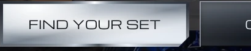

Approved screenshot

Both at the same size. The stops in the live button were read back out of the screenshot on an 8×11 grid rather than picked by eye: its darkest in-face value is 192, and the live fill's darkest stop is #b9c2cc, which is 192.
